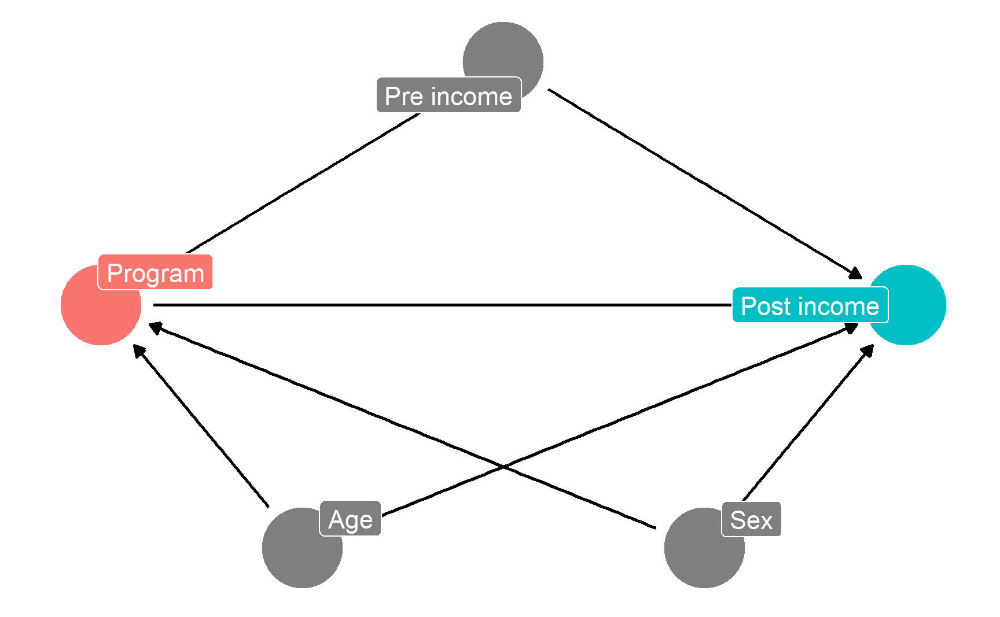
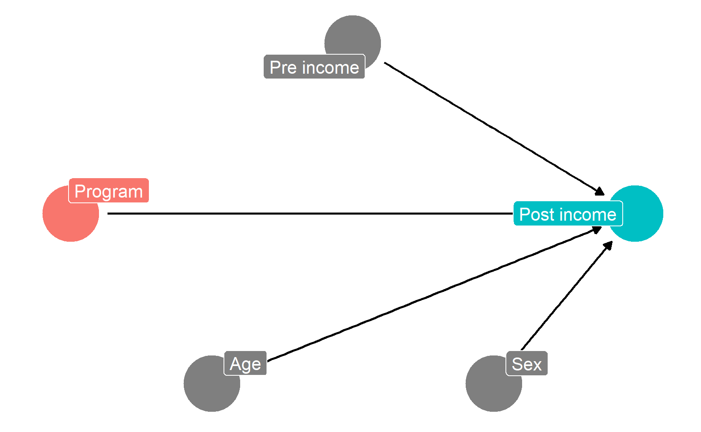
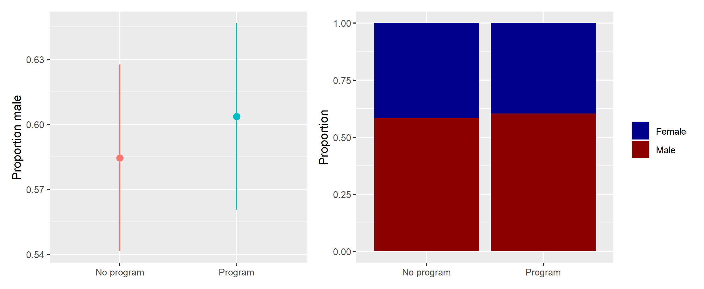
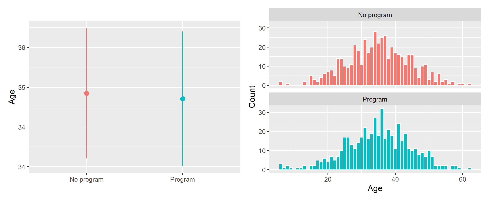
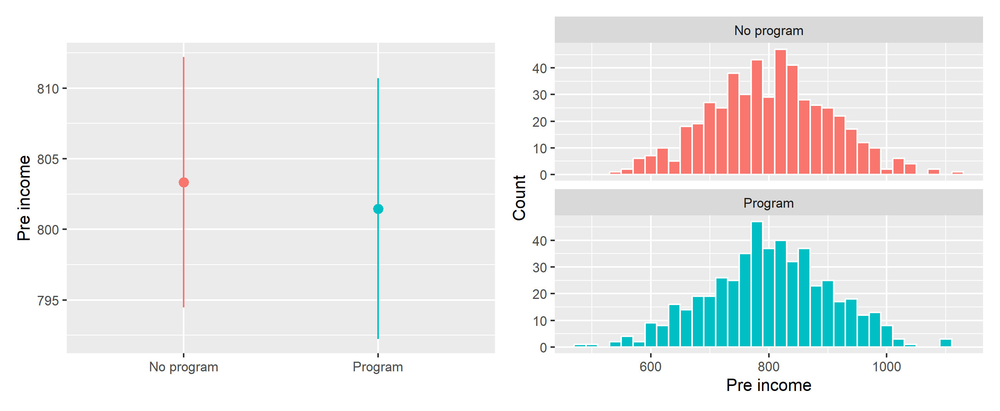
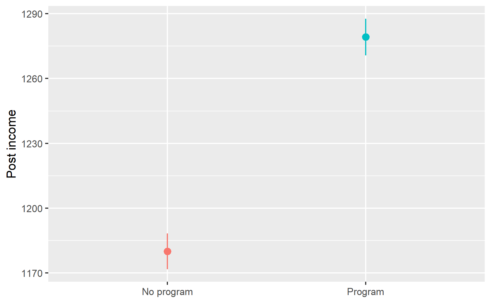

library(tidyverse) # ggplot(), %>%, mutate(), and friendslibrary(ggdag) # Make DAGslibrary(scales) # Format numbers with functions like comma(), percent(), and dollar()library(broom) # Convert models to data frameslibrary(patchwork) # Combine ggplots into single composite plotsset.seed(1234) # Make all random draws reproducible
In this hypothetical situation, an NGO is planning on launching a training program designed to boost incomes. Based on their experiences in running pilot programs in other countries, they’ve found that older, richer men tend to self-select into the training program. The NGO’s evaluation consultant (you!) drew this causal model explaining the effect of the program on participant incomes, given the confounding caused by age, sex, and prior income:
Code
income_dag <-dagify(post_income ~ program + age + sex + pre_income, program ~ age + sex + pre_income,exposure ="program",outcome ="post_income",labels =c(post_income ="Post income",program ="Program",age ="Age",sex ="Sex",pre_income ="Pre income"),coords =list(x =c(program =1, post_income =5, age =2,sex =4, pre_income =3),y =c(program =2, post_income =2, age =1,sex =1, pre_income =3)))ggdag_status(income_dag, use_labels ="label", text =FALSE, seed =1234) +guides(color ="none") +theme_dag()

The NGO just received funding to run a randomized controlled trial (RCT) in a village, and you’re excited because you can finally manipulate access to the program—you can calculate \(E(\text{Post-income} | do(\text{Program})\). Following the rules of causal diagrams, you get to delete all the arrows going into the program node:
Code
income_dag_rct <-dagify(post_income ~ program + age + sex + pre_income,exposure ="program",outcome ="post_income",labels =c(post_income ="Post income",program ="Program",age ="Age",sex ="Sex",pre_income ="Pre income"),coords =list(x =c(program =1, post_income =5, age =2,sex =4, pre_income =3),y =c(program =2, post_income =2, age =1,sex =1, pre_income =3)))ggdag_status(income_dag_rct, use_labels ="label", text =FALSE, seed =1234) +guides(color ="none") +theme_dag()

1. Check balance
You ran the study on 1,000 participants over the course of 6 months and you just got your data back.
Before calculating the effect of the program, you first check to see how well balanced assignment was, and you find that assignment to the program was pretty much split 50/50, which is good:
Code
village_randomized %>%count(program) %>%mutate(prop = n /sum(n))## # A tibble: 2 × 3## program n prop## <chr> <int> <dbl>## 1 No program 503 0.503## 2 Program 497 0.497
You then check to see how well balanced the treatment and control groups were in participants’ pre-treatment characteristics:
Code
village_randomized %>%group_by(program) %>%summarize(prop_male =mean(sex_num),avg_age =mean(age),avg_pre_income =mean(pre_income))## # A tibble: 2 × 4## program prop_male avg_age avg_pre_income## <chr> <dbl> <dbl> <dbl>## 1 No program 0.584 34.9 803.## 2 Program 0.604 34.9 801.
These variables appear fairly well balanced. To check that there aren’t any statistically significant differences between the groups, you make some graphs (you could run t-tests too, but graphs are easier for your non-statistical audience to read later).
There were more men in both the treatment and control groups, but the proportion is the same in both, and there’s no substantial difference in sex proportion:
Code
# Here we save each plot as an object so that we can combine the two plots with# + (which comes from the patchwork package). If you want to see what an# individual plot looks like, you can run `plot_diff_sex`, or whatever the plot# object is named.## stat_summary() here is a little different from the geom_*() layers you've seen# in the past. stat_summary() takes a function (here mean_se()) and runs it on# each of the program groups to get the average and standard error. It then# plots those with geom_pointrange. The fun.args part of this lets us pass an# argument to mean_se() so that we can multiply the standard error by 1.96,# giving us the 95% confidence interval.plot_diff_sex <-ggplot(village_randomized, aes(x = program, y = sex_num, color = program)) +stat_summary(geom ="pointrange", fun.data ="mean_se", fun.args =list(mult =1.96)) +guides(color ="none") +labs(x =NULL, y ="Proportion male")# plot_diff_sex # Uncomment this if you want to see this plot by itselfplot_prop_sex <-ggplot(village_randomized, aes(x = program, fill = sex)) +# Using position = "fill" makes the bars range from 0-1 and show the proportiongeom_bar(position ="fill") +labs(x =NULL, y ="Proportion", fill =NULL) +scale_fill_manual(values =c("darkblue", "darkred"))# Show the plots side-by-sideplot_diff_sex + plot_prop_sex

The distribution of ages looks basically the same in the treatment and control groups, and there’s no substantial difference in the average age across groups:
Code
plot_diff_age <-ggplot(village_randomized, aes(x = program, y = age, color = program)) +stat_summary(geom ="pointrange", fun.data ="mean_se", fun.args =list(mult =1.96)) +guides(color ="none") +labs(x =NULL, y ="Age")plot_hist_age <-ggplot(village_randomized, aes(x = age, fill = program)) +geom_histogram(binwidth =1, color ="white") +guides(fill ="none") +labs(x ="Age", y ="Count") +facet_wrap(vars(program), ncol =1)plot_diff_age + plot_hist_age

Pre-program income is also distributed the same—and has no substantial difference in averages—across treatment and control groups:
Code
plot_diff_income <-ggplot(village_randomized, aes(x = program, y = pre_income, color = program)) +stat_summary(geom ="pointrange", fun.data ="mean_se", fun.args =list(mult =1.96)) +guides(color ="none") +labs(x =NULL, y ="Pre income")plot_hist_income <-ggplot(village_randomized, aes(x = pre_income, fill = program)) +geom_histogram(binwidth =20, color ="white") +guides(fill ="none") +labs(x ="Pre income", y ="Count") +facet_wrap(vars(program), ncol =1)plot_diff_income + plot_hist_income

All our pre-treatment covariates look good and balanced! You can now estimate the causal effect of the program.
2. Estimate difference
You are interested in the causal effect of the program, or
This is simply the average outcome for people in the program minus the average outcome for people not in the program. You calculate the group averages:
Code
village_randomized %>%group_by(program) %>%summarize(avg_post =mean(post_income))## # A tibble: 2 × 2## program avg_post## <chr> <dbl>## 1 No program 1180.## 2 Program 1279.
That’s 1279 − 1180, or 99, which means that the program caused an increase of $99 in incomes, on average.
Finding that difference required some manual math, so as a shortcut, you run a regression model with post-program income as the outcome variable and the program indicator variable as the explanatory variable. The coefficient for program is the causal effect (and it includes information about standard errors and significance). You find the same result:
Based on your RCT, you conclude that the program causes an average increase of $99.25 in income.
Code
ggplot(village_randomized, aes(x = program, y = post_income, color = program)) +stat_summary(geom ="pointrange", fun.data ="mean_se", fun.args =list(mult =1.96)) +guides(color ="none") +labs(x =NULL, y ="Post income")

Source Code
---title: "Randomized controlled trials (RCTs)"---```{r setup, include=FALSE}knitr::opts_chunk$set(fig.width =6, fig.asp =0.618, fig.align ="center",fig.retina =3, out.width ="75%", collapse =TRUE)set.seed(1234)options("digits"=2, "width"=150)options(dplyr.summarise.inform =FALSE)```There's no video for this example, since the R code is fairly straightforward, and since [I talked about it in the lecture](https://www.youtube.com/watch?v=W0NyALrjLA4&list=PLS6tnpTr39sGJURMOwN9tf9MNDN4t0JMz) ([see the slides](/slides/07-slides.html#26)).If you want to follow along with this example, you can download the data below:- [{{< fa table >}} `village_randomized.csv`](/files/data/generated_data/village_randomized.csv)```{r load-libraries, message=FALSE, warning=FALSE}library(tidyverse) # ggplot(), %>%, mutate(), and friendslibrary(ggdag) # Make DAGslibrary(scales) # Format numbers with functions like comma(), percent(), and dollar()library(broom) # Convert models to data frameslibrary(patchwork) # Combine ggplots into single composite plotsset.seed(1234) # Make all random draws reproducible``````{r load-data-fake, eval=FALSE}village_randomized <-read_csv("data/village_randomized.csv")``````{r load-data-real, include=FALSE, warning=FALSE, message=FALSE}village_randomized <-read_csv(here::here("files", "data", "generated_data", "village_randomized.csv"))```## Program detailsIn this hypothetical situation, an NGO is planning on launching a training program designed to boost incomes. Based on their experiences in running pilot programs in other countries, they've found that older, richer men tend to self-select into the training program. The NGO's evaluation consultant (you!) drew this causal model explaining the effect of the program on participant incomes, given the confounding caused by age, sex, and prior income:```{r income-dag}income_dag <-dagify(post_income ~ program + age + sex + pre_income, program ~ age + sex + pre_income,exposure ="program",outcome ="post_income",labels =c(post_income ="Post income",program ="Program",age ="Age",sex ="Sex",pre_income ="Pre income"),coords =list(x =c(program =1, post_income =5, age =2,sex =4, pre_income =3),y =c(program =2, post_income =2, age =1,sex =1, pre_income =3)))ggdag_status(income_dag, use_labels ="label", text =FALSE, seed =1234) +guides(color ="none") +theme_dag()```The NGO just received funding to run a randomized controlled trial (RCT) in a village, and you're excited because you can finally manipulate access to the program—you can calculate $E(\text{Post-income} | do(\text{Program})$. Following the rules of causal diagrams, you get to delete all the arrows going into the program node:```{r income-dag-rct}income_dag_rct <-dagify(post_income ~ program + age + sex + pre_income,exposure ="program",outcome ="post_income",labels =c(post_income ="Post income",program ="Program",age ="Age",sex ="Sex",pre_income ="Pre income"),coords =list(x =c(program =1, post_income =5, age =2,sex =4, pre_income =3),y =c(program =2, post_income =2, age =1,sex =1, pre_income =3)))ggdag_status(income_dag_rct, use_labels ="label", text =FALSE, seed =1234) +guides(color ="none") +theme_dag()```## 1. Check balanceYou ran the study on `r comma(nrow(village_randomized))` participants over the course of 6 months and you just got your data back.Before calculating the effect of the program, you first check to see how well balanced assignment was, and you find that assignment to the program was pretty much split 50/50, which is good:```{r}village_randomized %>%count(program) %>%mutate(prop = n /sum(n))```You then check to see how well balanced the treatment and control groups were in participants' pre-treatment characteristics:```{r}village_randomized %>%group_by(program) %>%summarize(prop_male =mean(sex_num),avg_age =mean(age),avg_pre_income =mean(pre_income))```These variables appear fairly well balanced. To check that there aren't any statistically significant differences between the groups, you make some graphs (you could run t-tests too, but graphs are easier for your non-statistical audience to read later).There were more men in both the treatment and control groups, but the proportion is the same in both, and there's no substantial difference in sex proportion:```{r balance-sex, fig.width=9, fig.asp=0.618/1.5, out.width="100%"}# Here we save each plot as an object so that we can combine the two plots with# + (which comes from the patchwork package). If you want to see what an# individual plot looks like, you can run `plot_diff_sex`, or whatever the plot# object is named.## stat_summary() here is a little different from the geom_*() layers you've seen# in the past. stat_summary() takes a function (here mean_se()) and runs it on# each of the program groups to get the average and standard error. It then# plots those with geom_pointrange. The fun.args part of this lets us pass an# argument to mean_se() so that we can multiply the standard error by 1.96,# giving us the 95% confidence interval.plot_diff_sex <-ggplot(village_randomized, aes(x = program, y = sex_num, color = program)) +stat_summary(geom ="pointrange", fun.data ="mean_se", fun.args =list(mult =1.96)) +guides(color ="none") +labs(x =NULL, y ="Proportion male")# plot_diff_sex # Uncomment this if you want to see this plot by itselfplot_prop_sex <-ggplot(village_randomized, aes(x = program, fill = sex)) +# Using position = "fill" makes the bars range from 0-1 and show the proportiongeom_bar(position ="fill") +labs(x =NULL, y ="Proportion", fill =NULL) +scale_fill_manual(values =c("darkblue", "darkred"))# Show the plots side-by-sideplot_diff_sex + plot_prop_sex```The distribution of ages looks basically the same in the treatment and control groups, and there's no substantial difference in the average age across groups:```{r balance-age, fig.width=9, fig.asp=0.618/1.5, out.width="100%"}plot_diff_age <-ggplot(village_randomized, aes(x = program, y = age, color = program)) +stat_summary(geom ="pointrange", fun.data ="mean_se", fun.args =list(mult =1.96)) +guides(color ="none") +labs(x =NULL, y ="Age")plot_hist_age <-ggplot(village_randomized, aes(x = age, fill = program)) +geom_histogram(binwidth =1, color ="white") +guides(fill ="none") +labs(x ="Age", y ="Count") +facet_wrap(vars(program), ncol =1)plot_diff_age + plot_hist_age```Pre-program income is also distributed the same—and has no substantial difference in averages—across treatment and control groups:```{r balance-income, fig.width=9, fig.asp=0.618/1.5, out.width="100%"}plot_diff_income <-ggplot(village_randomized, aes(x = program, y = pre_income, color = program)) +stat_summary(geom ="pointrange", fun.data ="mean_se", fun.args =list(mult =1.96)) +guides(color ="none") +labs(x =NULL, y ="Pre income")plot_hist_income <-ggplot(village_randomized, aes(x = pre_income, fill = program)) +geom_histogram(binwidth =20, color ="white") +guides(fill ="none") +labs(x ="Pre income", y ="Count") +facet_wrap(vars(program), ncol =1)plot_diff_income + plot_hist_income```All our pre-treatment covariates look good and balanced! You can now estimate the causal effect of the program.## 2. Estimate differenceYou are interested in the causal effect of the program, or$$E[\text{Post income}\ |\ do(\text{Program})]$$You can find this causal effect by calculating the average treatment effect:$$\text{ATE} = E(\overline{\text{Post income }} | \text{ Program} = 1) - E(\overline{\text{Post income }} | \text{ Program} = 0)$$This is simply the average outcome for people in the program minus the average outcome for people not in the program. You calculate the group averages:```{r program-diffs}village_randomized %>%group_by(program) %>%summarize(avg_post =mean(post_income))```That's 1279 − 1180, or `r 1279 - 1180`, which means that the program caused an increase of `r dollar(1279 - 1180)` in incomes, on average.Finding that difference required some manual math, so as a shortcut, you run a regression model with post-program income as the outcome variable and the program indicator variable as the explanatory variable. The coefficient for `program` is the causal effect (and it includes information about standard errors and significance). You find the same result:```{r program-diffs-regression}model_rct <-lm(post_income ~ program, data = village_randomized)tidy(model_rct)```Based on your RCT, you conclude that the program causes an average increase of `r tidy(model_rct) %>% filter(term == "programProgram") %>% pull(estimate) %>% dollar()` in income.```{r rct-finding}ggplot(village_randomized, aes(x = program, y = post_income, color = program)) +stat_summary(geom ="pointrange", fun.data ="mean_se", fun.args =list(mult =1.96)) +guides(color ="none") +labs(x =NULL, y ="Post income")```